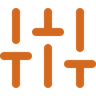
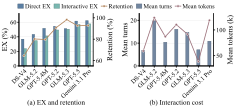
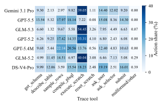
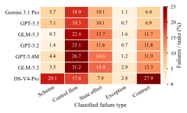
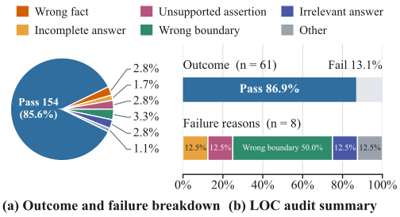

Leaderboard
Overall EX under the current filter — episodes passed over episodes played. The gear filters by mode, dialect and sub-scenario; hover a bar for the counts.
What ProcArena evaluates

Functional Modification Performance Optimization Code Repair Code CompletionCREATE OR REPLACE PROCEDURE
sp(para_Years_Working NUMBER,
para_Min_Staff NUMBER)
IS staff_count NUMBER;
BEGIN
SELECT COUNT(*) INTO staff_count
FROM "transportation_staff" WHERE
"Employment_Status" = 'Active';
IF staff_count > para_Min_Staff
THEN
DELETE FROM
"transportation_staff" WHERE
"Years_Working" > para_Years_Working * 2;
END IF;
END;
get_schemaask_userask_selectorexecute_scratchCREATE OR REPLACE PROCEDURE
create_order(uid_in INT)
LANGUAGE plpgsql AS $procedure$
DECLARE
user_cart_id INT;
new_order_id INT;
order_amount DECIMAL := 0;
BEGIN
SELECT cart_id INTO user_cart_id
FROM carts WHERE user_id = uid_in;
INSERT INTO orders (user_id, total_amount)
VALUES (uid_in, order_amount)
RETURNING order_id INTO new_order_id;
FOR rec IN SELECT * FROM carts_item JOIN products ON …
⋯ ⋯ ⋯
These are ProcArena's two arenas, drawn from one real pair of tasks. Nine sub-scenarios span the database development lifecycle — five kinds of PL/SQL synthesis (A1–A5) and four kinds of PL/SQL editing (B1–B4). Every task is played twice: in the Direct mode the solver receives the complete requirement and answers in one shot; in the Interactive mode the requirement arrives underspecified, and the solver must inspect the schema, question a simulated user, settle ambiguities through a selector, and rehearse SQL in a scratch database before submitting — all under a question budget. Both modes are graded the same way: the submitted procedure must leave the database in exactly the state the gold procedure leaves it in (execution-state equivalence, EX). Every number above and below stands on such episodes, and every cell links to a full replay of one.
Results by sub-scenario
EX (%) per sub-scenario; deeper green = higher. Hover a cell for passed / played counts; click it to replay that cell's representative episode — question turns, database calls, budget spend, final submission. The numbers match the paper's Table 6 exactly (Oracle Direct counted over the 939 tasks shared with the Interactive corpus).
Performance optimization

The B2 scenario asks the model to speed up a working procedure and is judged on runtime under a semantic-equivalence gate (the paper's Figure 4).
What interaction costs

Direct vs Interactive EX with the retention line, and the turns and tokens an Interactive episode consumes (Figure 5).
How models spend their actions

Share of each action type in Interactive episodes, per model (Figure 6).
Turn dynamics

What each step of an Interactive episode is spent on as episodes progress (Figure 7).
Where submissions go wrong

Failures by error type in the Interactive mode — control flow and persistent state dominate, and neither exists in declarative SQL (Figure 8).
Is the simulated user reliable?

A human audit of 180 sampled ask_user replies:
85.6% acceptable, no dominant failure mode, 3.3% answer leakage in the LOC
pool.
BibTeX
@article{zhang2026procarena,
title = {ProcArena: A Multi-Scenario Benchmark for {LLMs} on Direct and
Interactive {PL/SQL} Development from Natural Language},
author = {Zhang, Hang and Wang, Chaokun and Pan, Yuzhi and Zhong, Ziyao and
Cao, Shuo and Xue, Yue and Huang, Zeyu and Zhou, Xingwei and
Niu, Fang and Xie, Bofan and Ge, Guanchen and Zheng, Leqi and
Liu, Ziyang and Cao, Xiannian and Ge, Pengcheng},
journal = {arXiv preprint arXiv:2609.06527},
year = {2026}
}